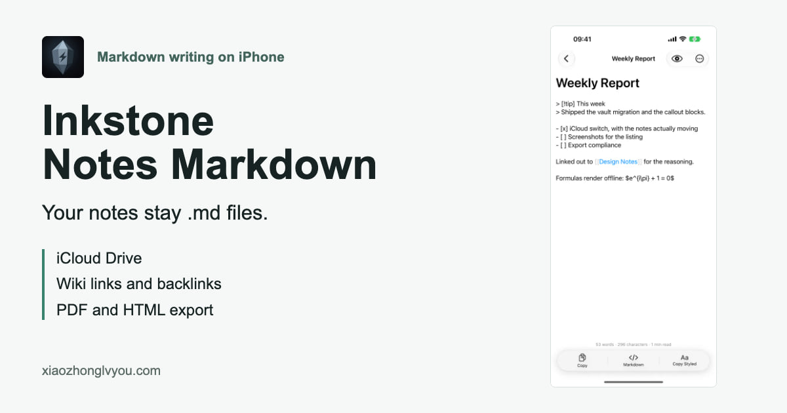
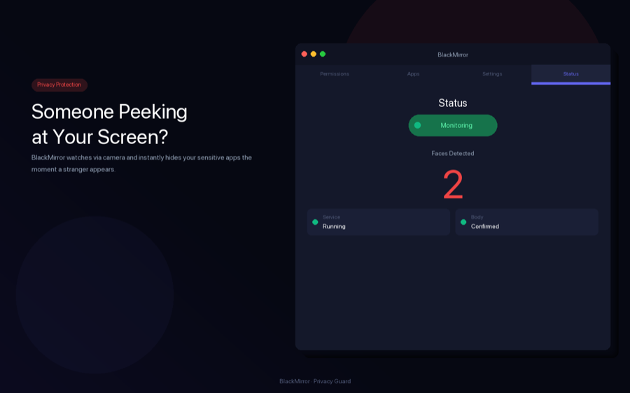
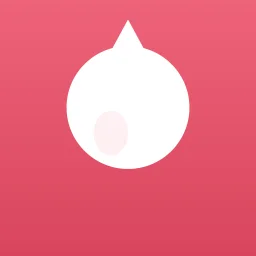
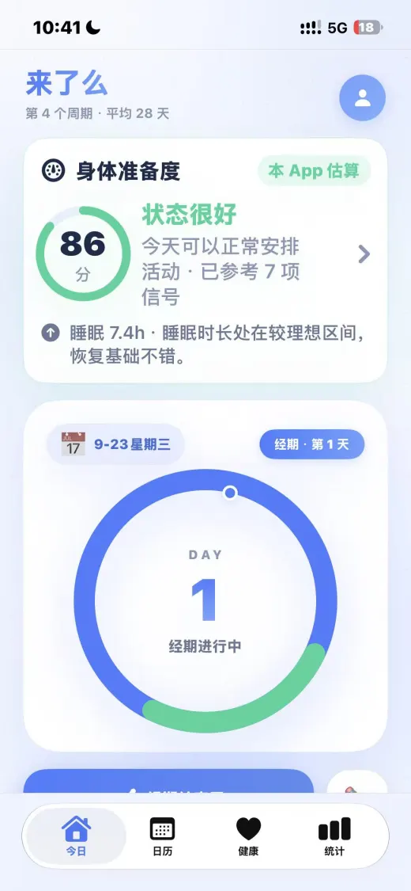
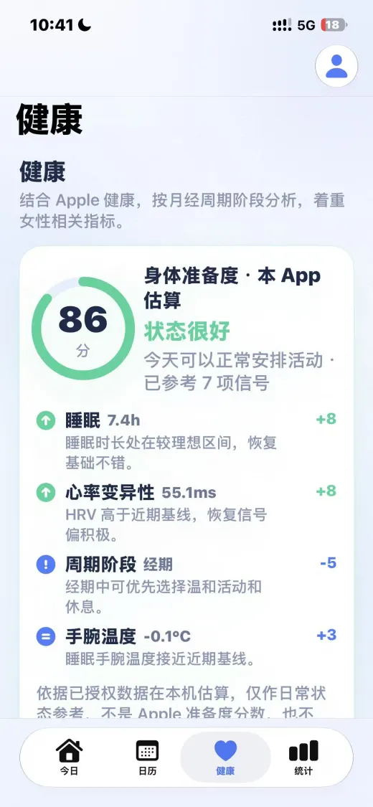
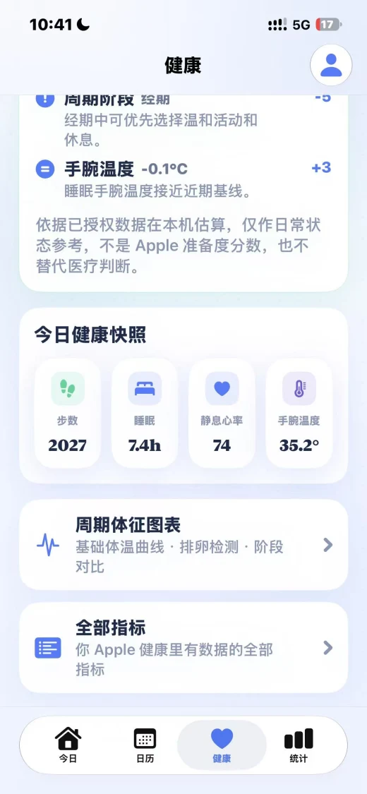
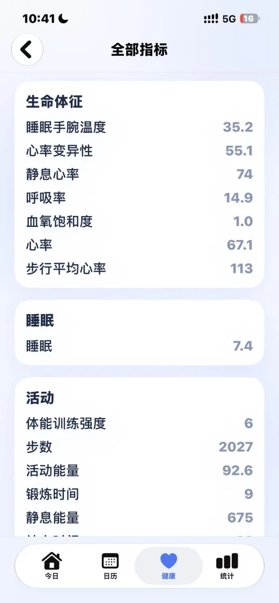
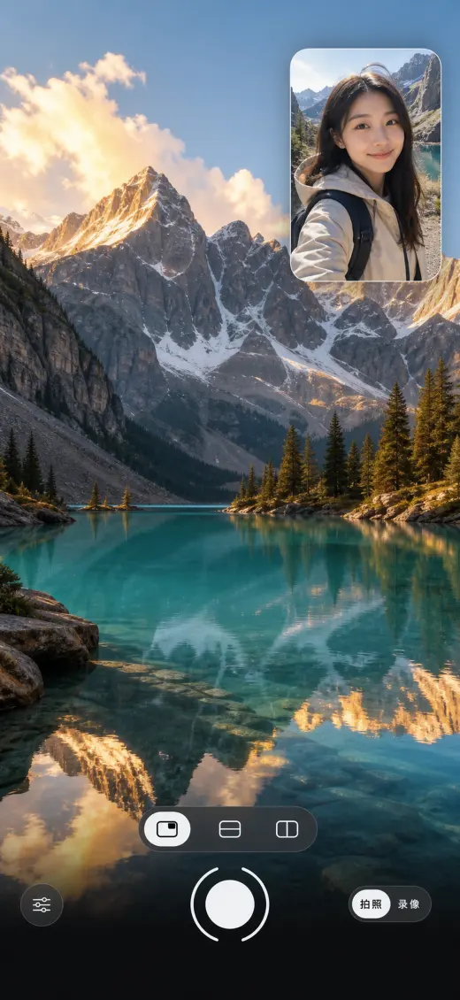

Inkstone Notes Markdown
Product page



For app reviewers and editors
This is the first-party reference page for CrazyAIAgent's iPhone, Apple Watch, and Mac utility apps. Use the product links below for coverage, then confirm time-sensitive prices and versions on the linked US App Store pages.

Verified product facts
The original six listings were checked on August 3, 2026, with the Mac app prices and versions rechecked on September 23; the three newer listings were checked on October 3, 2026. Prices and availability can differ by storefront.
Canonical coverage links
These clean, permanent URLs provide product context, screenshots, support paths, and direct App Store links. They are preferred over campaign-tagged links for editorial coverage.
https://www.xiaozhonglvyou.com/iphone-photo-cleaner.html
https://www.xiaozhonglvyou.com/travel-translator.html
https://www.xiaozhonglvyou.com/gif-maker.html
https://www.xiaozhonglvyou.com/happyride-auto-ride-tracker.html
https://www.xiaozhonglvyou.com/mac-screen-privacy.html
https://www.xiaozhonglvyou.com/lailemma-period-tracker.html
https://www.xiaozhonglvyou.com/inkstone-markdown-notes.html
https://www.xiaozhonglvyou.com/twopic-dual-camera.html
Screenshots and downloads
First-party app screenshots, icons and an Inkstone social preview. Screenshot language and file dimensions are listed with each asset; no translated interface is implied.

Body Readiness is estimated by the app on the device from authorized data. It is not an Apple score or a medical diagnosis.






Product assets
These files identify the current products. Please email the developer before publication to confirm the preferred asset and any usage requirements.
Editorial disclosure
CrazyAIAgent owns the apps described on this page. Feature descriptions are first-party product information, while version, compatibility, price, rating, and availability details should be checked against the linked App Store listing at publication time.
Email cb123428316@gmail.com with the page and fact that needs review.
CrazyAIAgent. “CrazyAIAgent App Review & Media Kit.” Updated October 3, 2026.
See the about page for product ownership, focus areas, and direct support details.